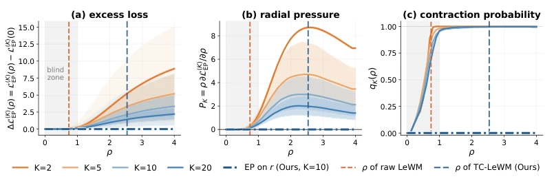
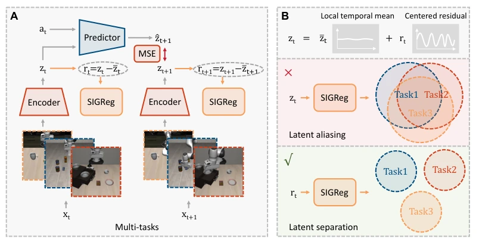
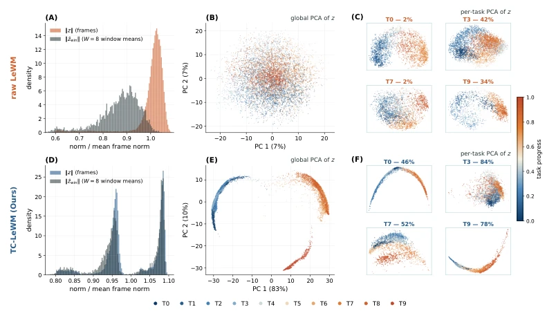
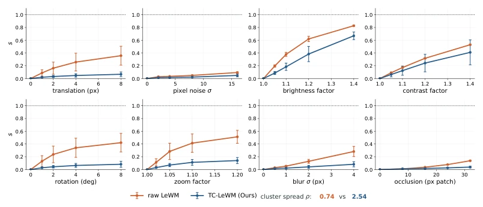
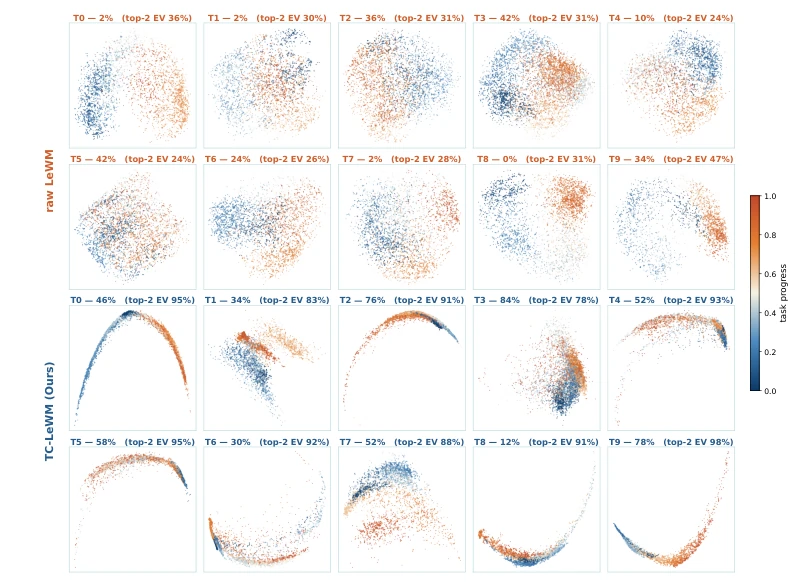
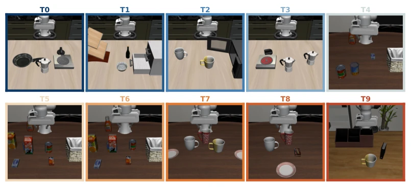

This paper performs a "plastic surgery" on the SIGReg mechanism of LeWorldModel (LeWM). Originally intended to prevent representation collapse, SIGReg acts like an obsessive-compulsive disorder in multi-task scenarios, forcibly squeezing the latent spaces of different tasks together, causing the downstream policy to fail to learn. The authors did not start from scratch but shifted the regularization target from the full latent variables to the time-centered residuals. This "leveraging small force to move heavy weight" strategy boosted multi-task success rates from 53.2% to 73.6%. Although the method is simple, it reveals the incompatibility between Gaussian priors and multi-task structures, constituting a precise finishing blow within the JEPA family. However, whether this modification targeting a specific architecture can generalize to other non-reconstruction models remains a question mark, given that LeWM itself is a relatively new architecture.
Existing LeWM (Maes et al., 2026) performs excellently in single-task settings, but once entering multi-task joint training, downstream behavior cloning performance collapses. Table 2 shows that under 10-task joint training, Raw LeWM success rate drops from 40.0% to 29.9%. The root cause lies in SIGReg (Balestriero & LeCun, 2025) forcing latent marginal distributions to follow isotropic Gaussians, applying shrinkage pressure on task cluster centers. Monte Carlo analysis in Figure 2 confirms that the EP target compresses component center distances, triggering representation aliasing. This means global non-collapse does not equal structural usability; multi-task control requires finer geometric structures, while existing regularization precisely destroys this structure. This explains why LeWM performs poorly on LIBERO-Long, despite its claim of end-to-end learning.

Figure 2: Monte Carlo analysis of the EP objective on randomized multi-component mixtures. (a) Excess EP loss relative to ρ = 0. (b) Median radial pressure over randomized configurations; positive values indicate contractive pressure on the global component-center spread. (c) Fraction of randomized configurations with detectable contractive pressure. Vertical dashed lines mark the measured ρ values of Raw LeWM and TC-LeWM on LIBERO-Long.
The core modification of TC-LeWM lies in the regularization target. The overall flow remains encoder predicting latent dynamics, but decomposes latent $z_t$ into local time mean $\bar{z}_t$ and residual $r_t$. SIGReg no longer acts on $z_t$, but only on $r_t$. This brings two benefits: first, residual regularization retains the ability to prevent time collapse; if $z_t$ is constant, $r_t$ degenerates to a point mass, and EP statistics will penalize; second, the mean $\bar{z}_t$ carries low-frequency task structure, unaffected by Gaussianization pressure, avoiding cluster center compression. Figure 1 illustrates this decomposition process. By removing direct constraints on low-frequency structures, TC-LeWM allows task-related structures to unfold naturally, while utilizing residual prediction constraints to maintain dynamic predictability. This is lighter than introducing additional momentum targets or contrastive losses, directly adapting to LeWM's non-reconstruction paradigm, and requiring no hyperparameter tuning.

Figure 1: Overview of TC-LeWM. (A) The encoder and action-conditioned predictor learn latent dynamics, while TC-LeWM decomposes each latent as zt = ¯zt + rt and applies SIGReg to the centered residual rt. (B) Marginal SIGReg contracts task-dependent structure, whereas TC-SIGReg removes this direct pressure while retaining anti-collapse regularization.
Tested on the LIBERO benchmark, covering Spatial, Object, Goal, Long four suites. Single-task, 10-task joint, and 40-task unified training are all evaluated. Table 1 shows that under 10 tasks, TC-LeWM average success rate is 73.6%, far exceeding Raw LeWM's 53.2%. PCA analysis in Figure 3 indicates that TC-LeWM's latent space task separation is clearer, and intra-task progress organization is more continuous. Figure 4 verifies robustness; TC-LeWM has smaller latent displacement under perturbations such as translation and rotation. Compared to Diffusion Policy trained from scratch, TC-LeWM performance is comparable or slightly better, and requires no external pre-training. Ablation studies (Appendix) confirm sensitivity to time window size, but overall prove the effectiveness of residual regularization. Under 40-task unified training, TC-LeWM remains stable, while Raw LeWM drops further, highlighting the scalability advantage of the method.

Figure 3: Latent representation analysis on LIBERO-Long. Top: Raw LeWM; bottom: TC-LeWM. (A,D) Normalized distributions of frame-level and window-mean latent norms. (B,E) Global PCA projections colored by task identity. (C,F) Per-task PCA projections for four tasks, colored by normalized task progress; titles report 50-rollout success rates of the visualized training seed. TC- LeWM exhibits reduced short-timescale variation and more organized inter- and intra-task latent structure than Raw LeWM.

Figure 4: Relative latent displacement under eight visual perturbations on LIBERO-Long. Dis- placement is normalized by the median distance between distinct clean observations, such that s = 1 denotes the typical clean-state separation. Lines and error bars show the mean and ±1 standard de- viation over three full-pipeline training seeds. TC-LeWM exhibits smaller relative displacement across all perturbation families. Bottom annotations report the episode-level normalized cluster spread ρ.

Figure 6: PCA projections of latent representations for all ten LIBERO-Long tasks from Raw LeWM and TC-LeWM models trained with the same random seed. For each task and method, PCA is fitted independently to the corresponding latent representations, and the points are colored by normalized episode progress. The explained variance of the two-dimensional projection is reported in each subplot title.
其他图片Other Figures

Figure 5: First frame from the first rollout of each of the ten LIBERO-Long tasks. Tasks with similar visual characteristics tend to occupy nearby regions in the TC-LeWM latent-space projection shown in Figure 3(B,E).